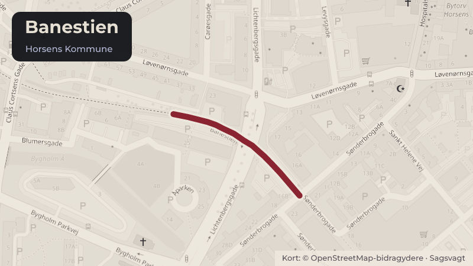

Besluttet 29. september, Byrådet, Horsens
BNK Anlægsbevilling, ny asfalt på Bryrupbanen fra Brædstrup til Den Genfundne Bro
Trafik og cyklerKlima og grøntBudget og økonomi

Kort fortalt
- Hvem
- Byrådet, Horsens Kommune
- Hvornår
- Tirsdag 29. september 2026
- Status
- Besluttet. Byrådet vedtog indstillingen fra Bæredygtigheds-, Natur- og Klimaudvalget samt Økonomi- og Erhvervsudvalget.
Er noget forkert her? Skriv til os
Læs hele sagen Kommunens egen tekst
Indstilling
Direktionen indstiller, at
1. Byrådet giver en anlægsbevilling med tilhørende rådighedsbeløb i 2026 på 0,850
mio. kr., til ny asfalt og kantstabilisering på ca. 5 km. af Bryrupbanestien.
2. Byrådet godkender, at rådighedsbeløbet finansieres af puljen ”Bedre Stier”.
Sagsfremstilling
Banestien fra Horsens til Silkeborg, der kaldes Bryrupbanestien, er en populær rute for turister
og borgere, som vil opleve den naturskønne strækning på cykel eller vandring. Stien bruges
også i det daglige som skolesti og gøremål væk fra hjemmet, der kan nås på gåben eller cykel.
Banestien er ejet af Naturstyrelsen, som har en aftale med Silkeborg og Horsens kommuner,
hvori fordelingen af stiens vedligehold er præciseret.
Ifølge aftalen skal kommunerne stå for al vedligeholdelse, der omhandler belægninger m.v.
(det horisontale), imens Naturstyrelsen skal vedligeholde skråninger træer og skilte m.v. (det
vertikale).
Siden stiens indvielse i 1999 er asfalten lappet, når huller og lignende er opstået. I 2025
renoverede kommunen strækningen fra kommunegrænsen Horsens-Silkeborg til Brædstrup by
og ud til Trædenvej med ny asfalt og kantgrus.
Administrationen har ved en besigtigelse af hele Bryrupbanestien fra Horsens by til
kommunegrænsen gennemgået og vurderet asfaltbelægningens omtrentlige levetid. Denne
tekniske gennemgang bruges i en prioritering af, hvilke delstrækninger, der får udlagt ny asfalt.
Hidtil er finansieringen dækket ved driftsmidler og suppleret af 0,5 mio. kr., som forligspartierne
i budgetforlig 2026 besluttede at give til formålet, da Regeringen ekstraordinært uddelte midler
til kommunerne samt 0,250 mio.kr. overført fra puljen "bedre stier" ved budgetopfølgningen pr.
Administrationen har vurderet, at den næste strækning af Bryrupbanestien, der trænger til ny
asfalt, er fra Trædenvej øst for Brædstrup til Den Genfundne Bro. Det er en strækning på ca. 5
km., hvor der er huller og asfalten er krakeleret og ujævn.
Administrationen har modtaget flere henvendelser om stiens ringe forfatning. Dele af
strækningen bliver brugt som skolesti.
Økonomi
Forligspartierne har i budgetforlig 2020 besluttet at afsætte 3 mio. kr. til bedre skiltning og stier i
naturen.
Konkret skulle Bankagerstien asfalteres og have bedre belysning, hvilket blev realiseret i 2020.
Desuden skulle behovet for asfaltering eller opgradering af andre stier undersøges, med
henblik på at skabe bedre forhold for skolebørn og cyklister.
Ud over Bankagerstien besluttede Byrådet, at stien langs Bygholm Å mellem Niels Gyldings
Gade og Holmboes Alle skulle asfalteres og belysningen opgraderes, hvilket er realiseret i
Det resterende beløb af puljen på 0,850 mio. kr. foreslår administrationen anvendes, til at
finansiere udlægningen af ny asfalt og kantstabilisering af Bryrupbanestien på den nævnte
strækning.
Projektet vil kunne realiseres i 4. kvartal 2026.
Der søges med denne sag en anlægsbevilling med tilhørende rådighedsbeløb i 2026 på 0,850
mio. kr. Rådighedsbeløbet finansieres af puljen til bedre stier.
Der er i projektets økonomi afsat 50 t. kr. til intern projektering.
Hvis denne strækning får ny asfalt, vurderer administrationen på baggrund af sin tekniske
gennemgang af Bryrupbanestiens asfaltbelægning, at der vil gå mange år, inden der skal ny
asfalt på andre delstrækninger af stien.
Der er ikke yderligere afledte driftsudgifter i forbindelse med renoveringen af stien, ud over det
driftsbudget, der allerede er afsat til området.
/FHL
Historik
Beslutning fra Bæredygtigheds-, Natur- og Klimaudvalget, den 15. september 2026,
punkt 1:
Bæredygtigheds-, Natur- og Klimaudvalget tiltrådte indstillingen.
Beslutning fra Økonomi- og Erhvervsudvalget, den 22. september 2026, punkt 3:
Økonomi- og Erhvervsudvalget tiltrådte indstillingen.
Michael Nedersøe deltog ikke i mødet.
Beslutning
Byrådet vedtog indstillingen fra Bæredygtigheds-, Natur- og Klimaudvalget samt
Økonomi- og Erhvervsudvalget.
Kilde: Horsens Kommune, Byrådet, referat fra mødet tirsdag 29. september 2026, punkt 4. Læs den originale sag hos kommunen.
Bydele i sagen: Brædstrup